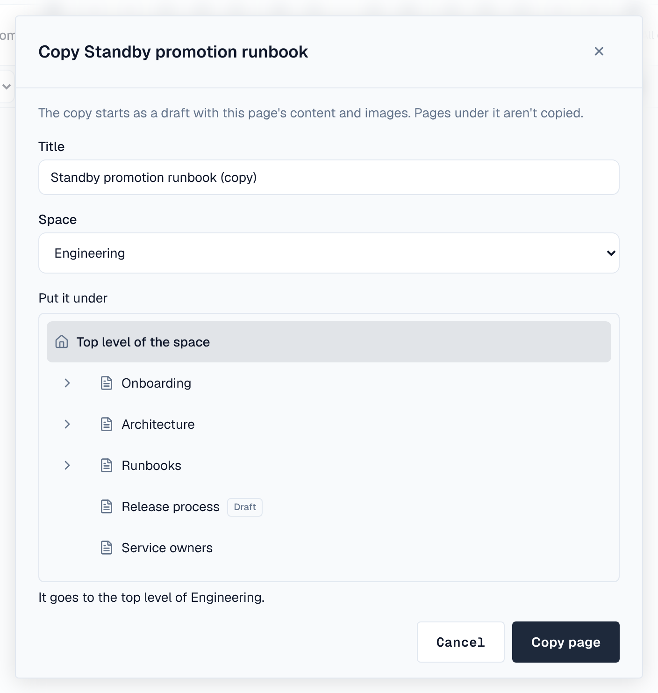
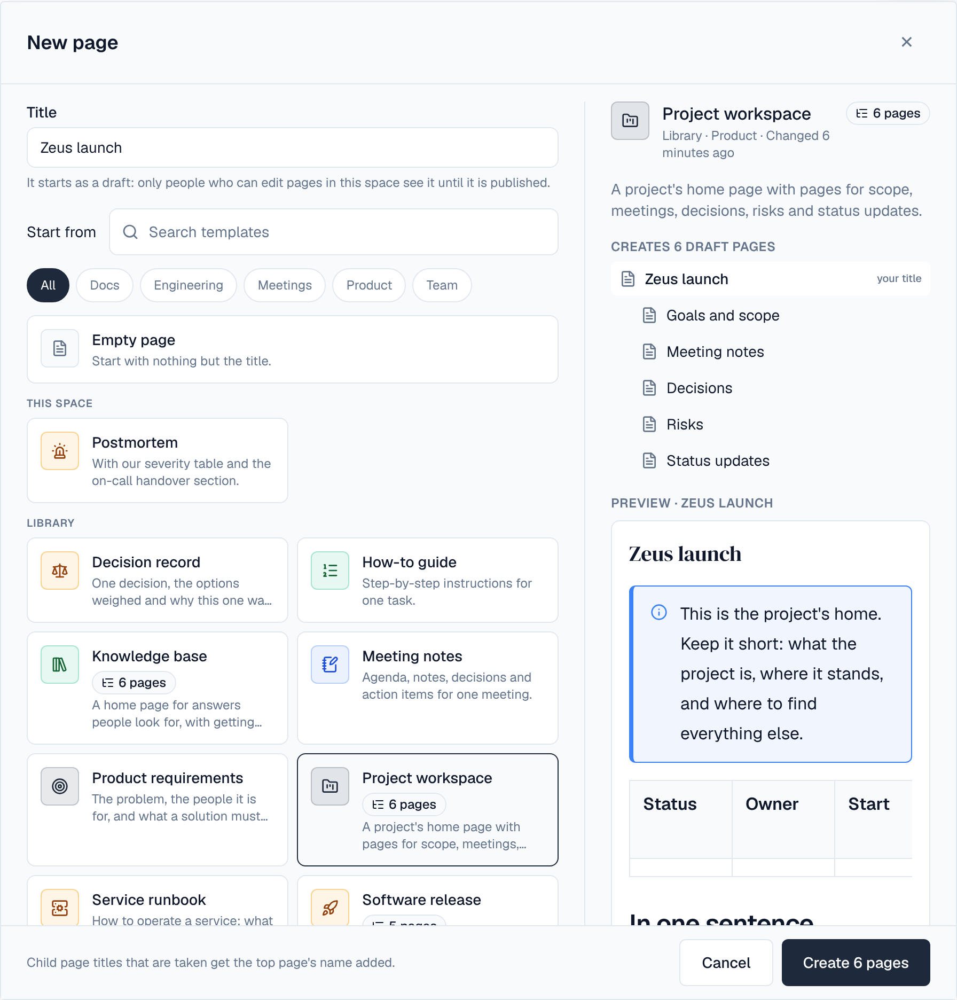
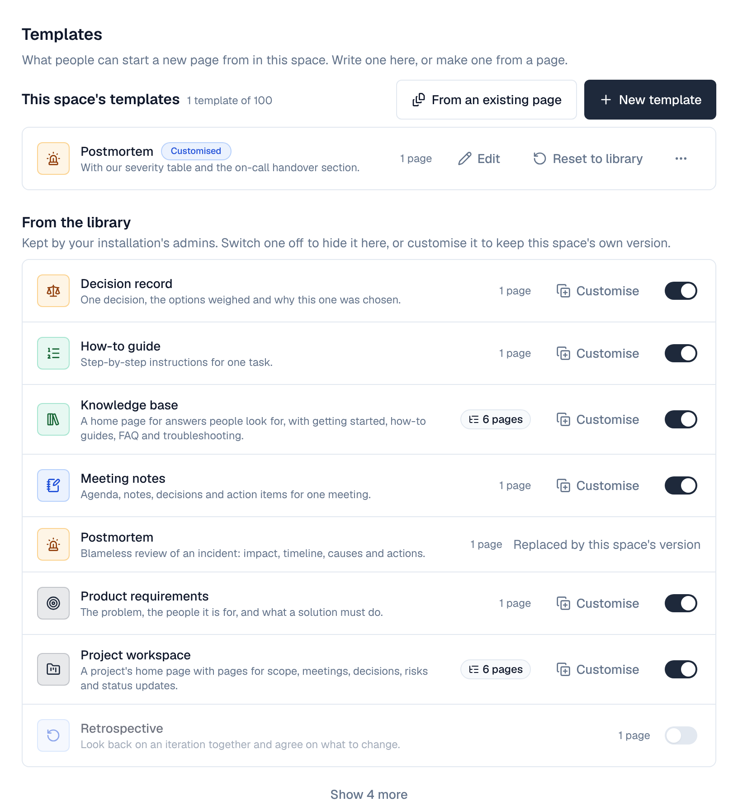
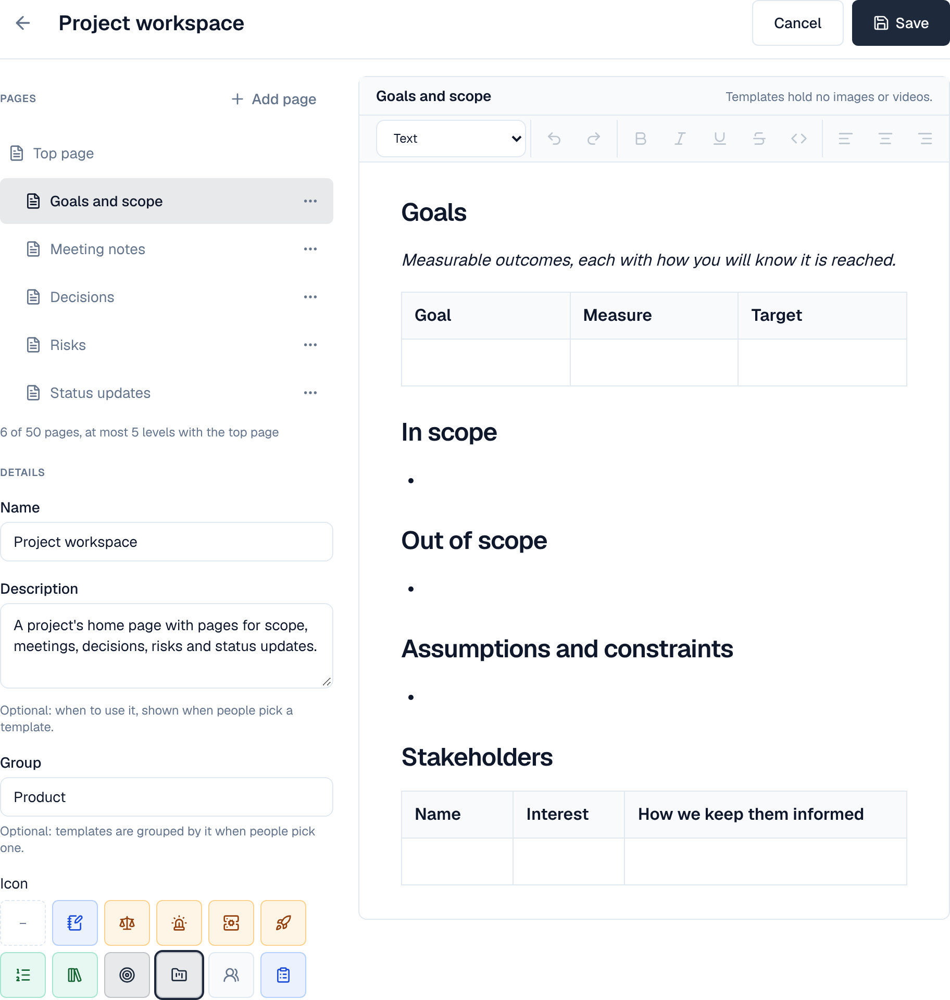
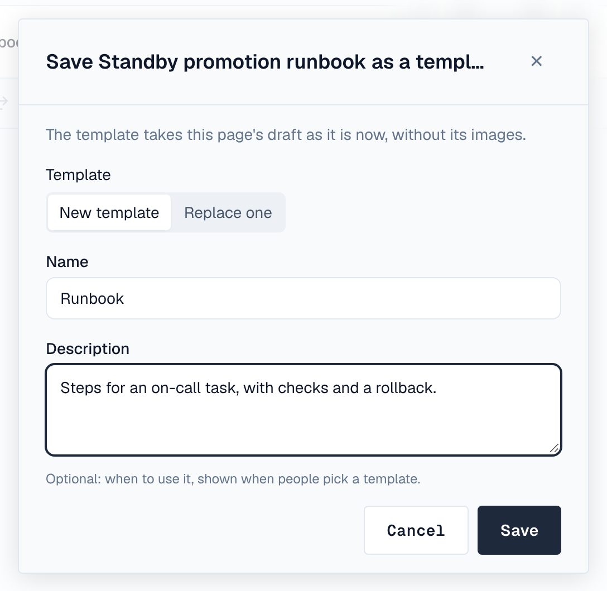

1. Copy a page
Copy in the reading view (or Page details in the editor) makes a new page with this page's content and images:
- Select Copy — Signed in, you can copy any page you can read.
- Pick the title, space and place — The title starts as "… (copy)". Space lists the spaces where you can add pages, and Put it under picks a page there or the top level.
- Select Copy page — The copy starts as a draft.
- If you edit the page, the copy takes its current draft; otherwise the latest published version.
- Pages under it aren't copied.
- Up to 100 images (256 MB together) are copied with it; the Wiki tells you if some weren't.

2. Start from a template
When you create a page, Start from offers Empty page and the templates you can use in this space: the space's own under This space, and the ones your administrators keep for every space under Library. Search them, or pick a group such as Meetings or Engineering.

- A template is one page or a tree of pages. One with a pages badge (such as 6 pages) creates its top page with your title and every page under it, all as drafts, in one go. The button says how many: Create 6 pages.
- The preview shows the pages a template creates and the content of its top page before you create anything.
- A page under the top page keeps the title the template gives it. If a page beside it already has that title, the top page's name is added (Goals and scope – Hermes rollout).
- Pages keep their content when the template changes later.
The library starts with twelve ready-made templates: Meeting notes, Decision record, How-to guide, Postmortem, Product requirements, Retrospective, Service runbook and Weekly status report (one page each), and Knowledge base, Project workspace, Software release and Team space starter (a tree of pages each). Your administrators can change them and add their own.
3. A space's templates
Space admins manage what the space offers under Templates in the space's Settings tab.

- This space's templates are the space's own: up to 100, with names unique in the space. Each has Edit (name, description, group and icon), Edit content, Add to library (for people who manage the library) and Delete.
- From the library lists the templates kept for every space. Switch one off to hide it from this space's New page; other spaces aren't affected.
- Customise keeps this space's own version of a library template. It opens in the template editor, is marked Customised, and is offered here instead of the library's. Reset to library deletes the copy and offers the library's version again.
- Deleting or changing a template never changes pages made from it.
4. Write or edit a template
New template opens the template editor on an empty template, and Edit content opens it on an existing one. It is the page editor with a list of the template's pages beside it.

- Open the space and select Space settings in its sidebar.
- Open the Templates tab.
- Select New template. The template editor opens on an empty template.
- Give it a name under Details, write the top page, and add more pages under Pages if the template should create several.
- Select Save. The template is offered under New page in this space at once.
- Pages: Top page is the page that takes the title people type. Add page adds a page under it; each page's menu has Rename, Add page under it, Move up, Move down, Move in a level, Move out a level and Delete page. Select a page to edit its content.
- Details: the name, an optional description shown when people pick a template, an optional group, and an icon.
- Save saves the details, every page and its content together. Leaving with unsaved changes asks first. If someone else saved the template while you were editing, your save is refused: reload to get their version.
| Limit | Value |
|---|---|
| Pages in one template | 50, counting the top page |
| Levels | 5, counting the top page |
| Page titles | Unique among the pages beside them |
| Content | Text, tables and blocks. Templates hold no images or videos, and people can't be mentioned while editing one. |
5. Make a template from a page
Save as template in a page's Page details saves the page's draft as it is now, without its images, as a New template, or replaces an existing one (Replace one keeps its name and description). Include child pages makes the pages under it that you can read part of the template. New template in the space's Templates settings offers the same under From an existing page.
